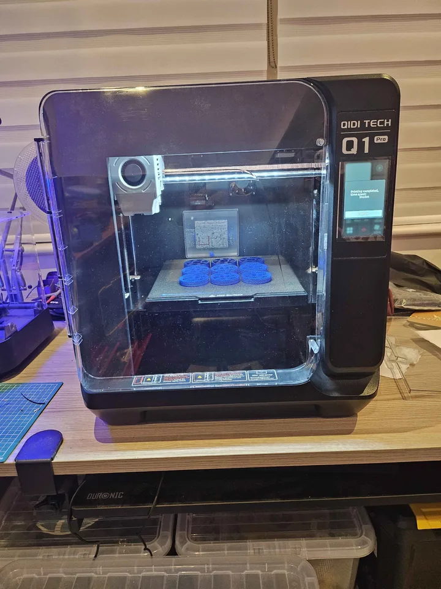

1 Buy one of these or an equivalent local to your country:
To get to the emmc you need to unscrew all screws from the rear of the printer and also 3 screws either side of the rear panel.
Then unscrew the two screws that mount the emmc to your printer motherboard and remove the emmc.
There is a clear diagram / picture on the adapter showing the orientation for plugging in to flash which we will come to later.
Install WSL on windows (Windows sub system for linux)...
Launch Windows powershell.
List linux distros
wsl --list --online
Choose what to install e.g. ubuntu
wsl install -d ubuntu
Note this will prompt for a username and password for your windows subsystem for linux (wsl) linux distro.
Move the tarball in this repo directory to the Linux Ubuntu/home/<your username> directory using Windows Explorer (yellow folder not the browser).
Make a folder to extract the tarball into
mkdir qidiroot
Extract the tarball into said root folder
sudo tar xvf qidq1pro-os.tar.gz -C qidiroot
Modify to YOUR wifi credentials
sudo nano qidiroot/etc/wpa_supplicant/wpa_supplicant-wlan0.conf
Edit your SSID and password and then Ctrl+X and hit Y then enter to exit the editor.
As an aside the root password is makerbase.
Flash the emmc using BalenaEtcher using the Qidi Q1 image from this link
Eject the emmc once done.
TURN OFF the PRINTER!!!
Install the emmc into the printer motherboard; NOTE: you MUST use the screws to mount it or it will not be securely seated and may not read correctly.
Turn ON the PRINTER!!!
First identify your Qidi's IP address using AngryIPScanner which you can download from the internet here: Angry IP Scanner
Sort by hostnames to find the Qidi once scanned.
ssh into the printer e.g.
ssh root@<insert IP address here without angled brackets>
On your wsl console in Windows, enter
sudo -s
Check everything is OK with a dry run of synchronising my correct Qidi Q1 Pro tarball of operating system data to your emmc drive...
rsync -aSPvx --delete -n --numeric-ids qidiroot/ root@<insert your IP here without angled brackets>:/
If all good, then do it for REAL
rsync -aSPvx --delete --numeric-ids qidiroot/ root@<insert your IP here without angled brackets>:/
Go to your ssh terminal and enter
sudo shutdown now
WAIT for 1 minute then switch OFF the printer.
UI will be borked. Therefore, format a FAT32 USB stick and copy to the root directory this file:
mksclient.recovery
Plug in USB stick to printer and turn printer on.
WAIT at least 10 seconds, before any turn off then switch ON the printer.
Wait for flash. The UI is probably still borked but this is fine.
Now plug USB stick into PC, download emmc firmware from here (at the time of writing this is Q1_V4.4.24.zip).
In order to extract the zip file you will need probably to create an exception in your virus scanner since it will likely be immediately quarantined; or if you're feeling lucky, simply temporarily disable your virus scanner, extract then re-enable it immediately.
Copy the QD_Update directory (not just the content) to your USB stick.
Go to printer UI settings and perform a local firmware update from the USB stick.
Once done, everything should be GUCCI!!!
ENJOY!!!
{kind=link}
